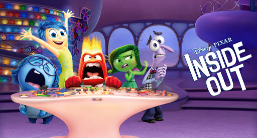
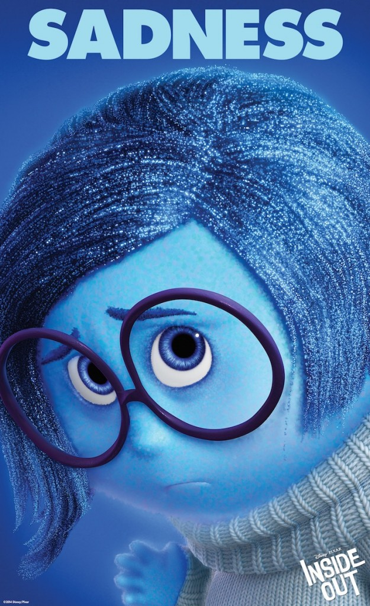

Insideout is a 2015 American 3D computer-animated comedy film produced by Pixar Animation Studios and released by Walt Disney Pictures. The film was directed by Pete Docter and co-directed by Ronnie del Carmen, with a screenplay written by Docter, Meg LeFauve, and Josh Cooley, adapted from a story by Docter and del Carmen. The film is set in the mind of a young girl named Riley (Kaitlyn Dias), where five personified emotions—Joy (Amy Poehler), Sadness (Phyllis Smith), Anger (Lewis Black), Fear (Bill Hader), and Disgust (Mindy Kaling)—try to lead her through life as she and her parents (Diane Lane and Kyle MacLachlan) adjust to their new surroundings after moving from Minnesota to San Francisco.
Plot
Within the mind of an American girl named Riley are the basic emotions who control her actions—Joy, Sadness, Fear, Disgust, and Anger. Her experiences become memories, stored as colored orbs, which are sent into long-term memory each night. Her five most important "core memories" power aspects of her personality which take the form of floating islands. Joy acts as the leader, and she and the rest of the emotions try to limit Sadness's influence.

Inside Out (2015) full movie english
characters
-
Riley's family
-
Riley Andersen
she is a major character in the 2015 Disney/Pixar film Inside Out. She is voiced by Kaitlyn Dias. She is an 11-year old girl (12 at the end of the film) who loves hockey. Riley was uprooted from her happy and simple life in Minnesota
- her father who got a new job at San Francisco
- her mother
-
Riley Andersen
-
Riley emotions
-
Sadness
 - Disgust
- Anger
- Fear
- Joy
-
Sadness